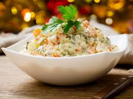

Russian Salad

It's delicious. It lasts a long time... and it's a salad with a story!
Russian salad, or Salad Olivier, is probably the best salad to come out of Russia.
Ingredients:
- Eggs: More is more here, so 4 minimum. Eggs balance out and soften heavier ingredients. Sub with duck, goose, or quail eggs, but be aware that each has a different taste.
- Vegetables: Peas, carrots, and potatoes, plus pickles are all you need. If using frozen, cook for a shorter period of time. Canned works too.
- Meat: Smoked beef or cured smoked or baked ham are the best choices. Sub with chicken or turkey breast, prosciutto, canned, fried, or baked fish, and bologna or salami. (Bologna or salami should be your last option!)
- Herbs and Seasonings: Less is more. Don't overwhelm this already rich salad. Salt and pepper to taste, as well as minced parsley garnish, are perfect. (Some like to add dill, which overpowers the taste. Be careful!)
- Dressing:
- Half mayo half sour cream. Mix the two, then mix them into the salad.
- Sour cream. A pinch of olive oil and lemon is optional.
- Sour cream and soy sauce.
- Greek or plain yogurt. Look for a consistency similar to mayo.
- Kefir with yolks from boiled eggs.
Steps:
- Layer ingredients in a large bowl starting with veggies, then eggs, pickles and meat.
- Add mayo in batches, and continue stirring until integrated. Cover with saran wrap, and leave in fridge 3-4 hours (preferably overnight).